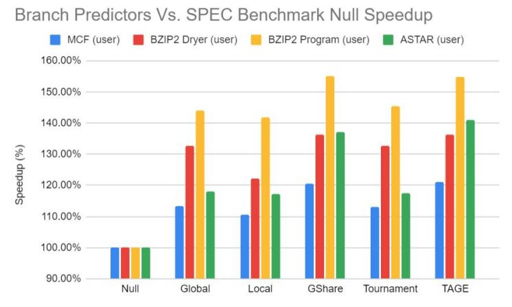

Documentation
Most of my work in this process related to utilizing Chipyard to model and generate multiple different branch predictors. Chipyard uses Scala files to model processor blocks in a hierarchal fashion, unlike the traditional Verilog. Instead, Scala classes can be used to modify different parameters of our BOOM core branch predictor, such as how many local or global sets are used, the size of local counters, or how theses counters are connected to form a tournament predictor which uses both a global and local predictor, for example. Chipyard came with three premade branch prediction schemes, including Tournament, GShare, and TAGE, in which the referenced class could be swapped out for the size of BOOM core which we were using, which was the small BOOM core. The only thing that changed between BOOM core sizes was the issue width and memory size, which would not impact our branch predictors. However, if the BOOM core was larger, we were suggested that we may not have enough LUTs on our desired FPGA to reconfigure the entire processor core. By tweaking the preconfigured predictors, we were able to define our own modified branch predictors, including a global and local branch configuration, and a predictor without ANY prediction scheme. In the FPGA Chipyard toolflow, Vivado projects are generated by default and add all RTL to them directly, which makes attaining synthesis results very easy after the correct Scala configurations are set.
The second main challenge of our project was getting CPU benchmarks to run on our reconfigured FPGA, the Xilinx ZCU106. This required us to use Firemarshal, another open-source tool that was attached to Chipyard, which would provide us with a light Linux kernel that could be loaded onto an SD card for our ZCU106 board to run executables. We were able to successfully compile three different SPEC2006 benchmarks which were provided in the course to use for a separate cycle level architecture simulator previously. These benchmarks included MCF, ASTAR, and BZIP2. We had an issue when running ASTAR where each of our 6 BOOM cores output the same error where the expected output did not match. We assumed this was okay since all 6 cores had the same output error, meaning it was still okay to compare their execution times, with the expectation that the expected output was not met. For each BOOM core, it took around an hour and a half to run each suite of benchmarks for every branch configuration. Once this was complete, we had attained all of our desired results and were ready for analysis.
 The above graph reports the relative speedup in terms of execution time for each predictor scheme relative to the null predictor, which had no prediction scheme implemented. The SPEC2006 benchmark with the least amount of overall speedup was MCF, while the highest gains were seen with the BZIP2 program benchmark. It should be noted that based on the type of assembly programs compiled, the prediction accuracy can vary widely for each specific program and each prediction scheme. We saw that the leaders in performance improvements for our sample of benchmarks were GShare and TAGE, but as seen above TAGE consumed more power, leading to GShare being the most optimal in terms of power. A similar comparison can be seen for utilization, where TAGE required more area (or LUTS for an FPGA) to implement than GShare. In a more constrained environment, it may be beneficial to instead utilize the less performant predictors if area or power constraints are high.